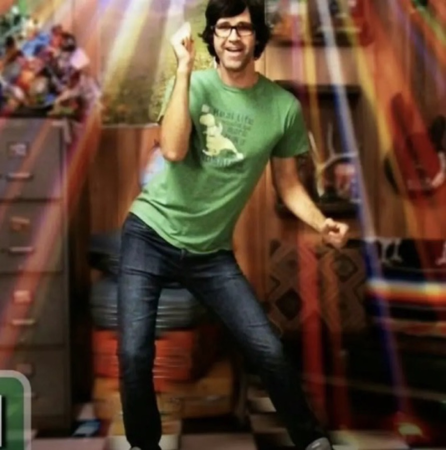
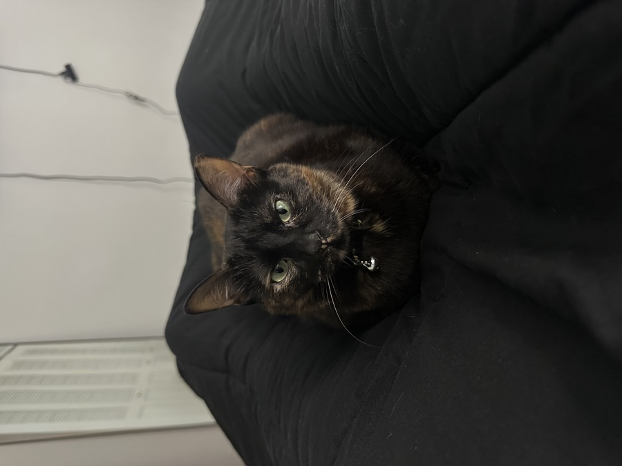

Janai Adams
ResumeAbout Me

Janai Adams | My Story
I'm a UX Researcher and Designer passionate about maximizing efficiency across the board. I'm especially interested in health informatics where UX can drastically improve consumer's and physician's everyday experiences while maximizing opportunities for stakeholder return. My educational background includes a Bachelor of Business Administration in Marketing from Texas State University and a Master of Science in Information focused in UX Research & Design from the University of Michigan. With a background in business, I have the breadth of researching for and designing products that consider users and those who have stake in how said products perform.
Outside of the office, I am doing my best to maximize my gym gains, find the most beautiful hiking trails around, and give my cat, Monkey, the best life possible. I also love to crochet and am currently working on crocheting my first pair of pants🧶.
Thank you for taking the time to evaluate my work and getting to know me a little bit better - I hope you'll allow me to do the same! Lets connect!
Contact

'UX can fix that!'

GO BLUE!